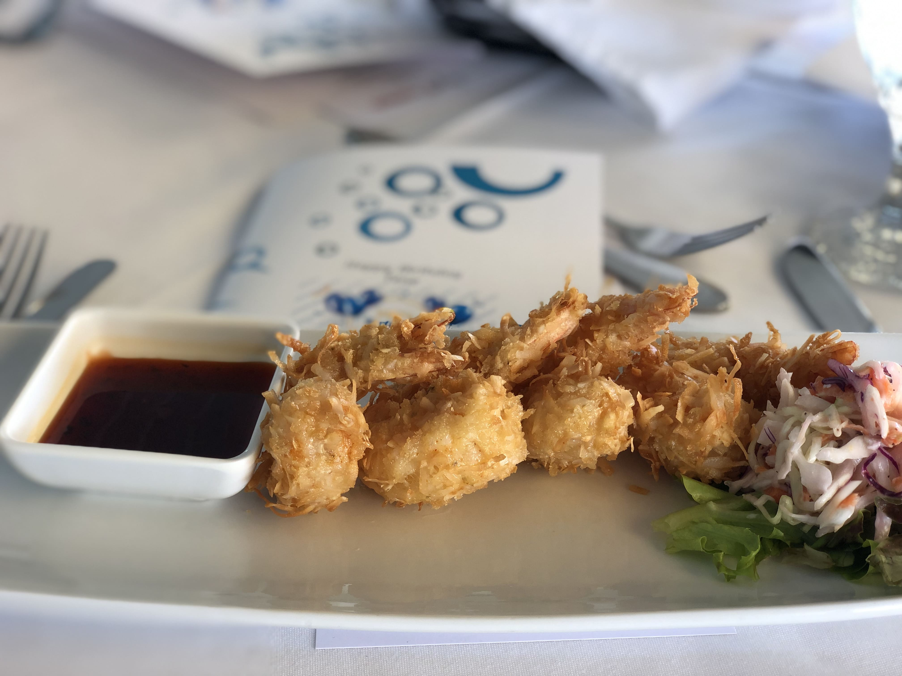
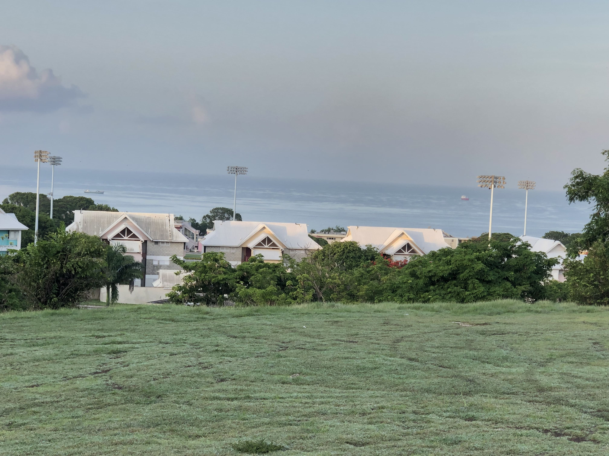
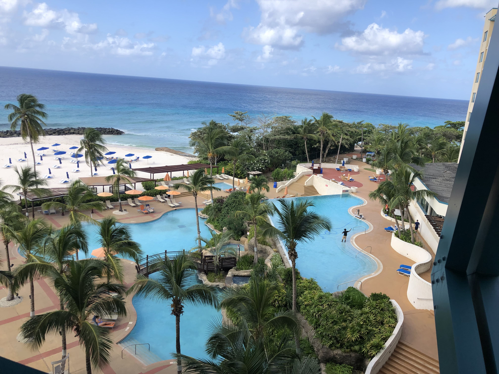
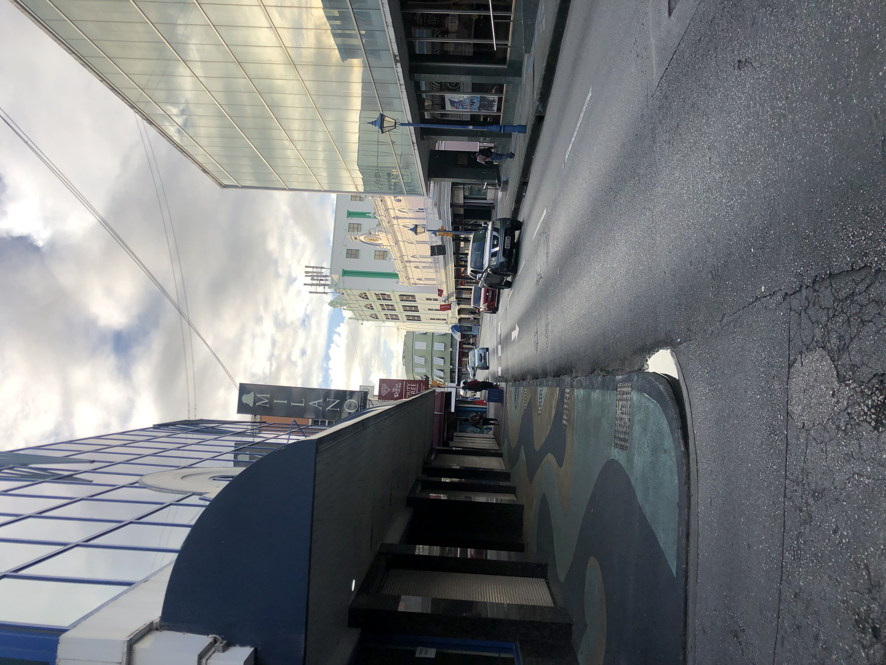
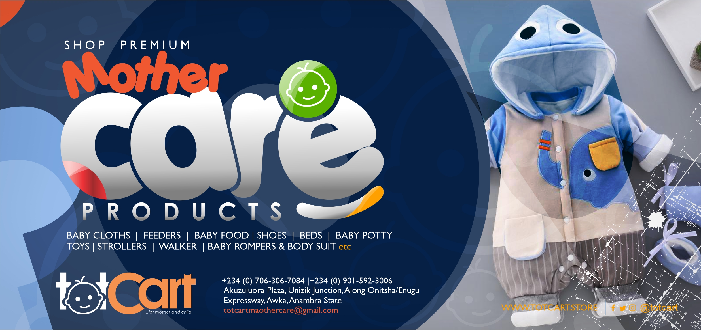
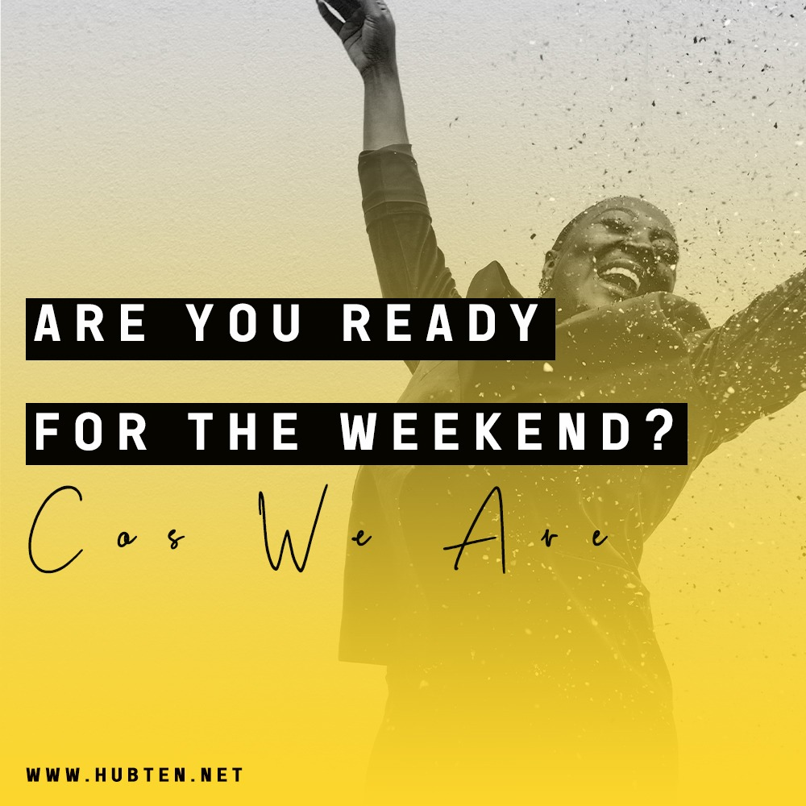
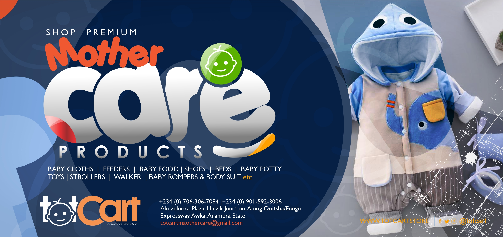
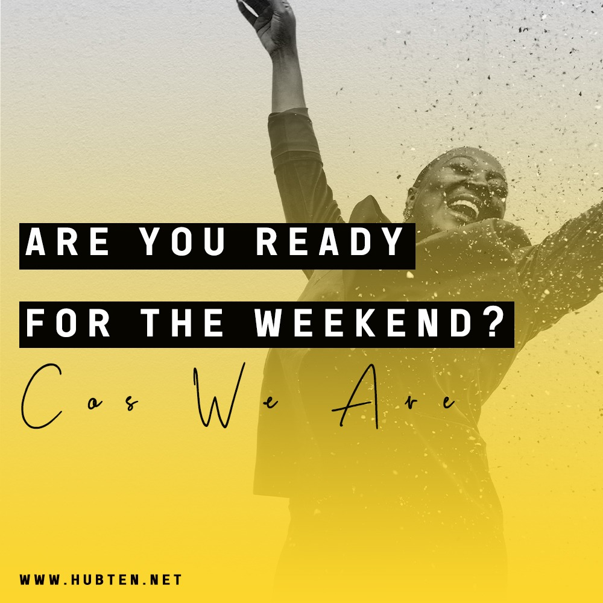

Hightlights
Click highlights to learn more.
    
 I have a good knowledge of graphic design, corporate
branding, brand design and development, brand identity and
marketing, digital marketing. I have also worked on some
project which
involves business development,
business plans, projections, and set up. I also have a bachelor
degree in Civil and Environmental
Engineering.